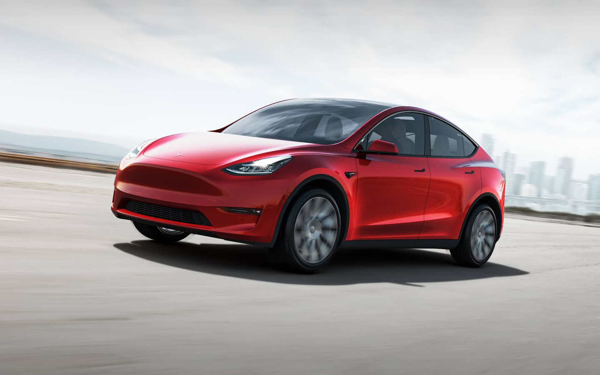

Tesla Model Y

Безопасность
Создан для безопасности.
Как и любая Tesla, Model Y спроектирована, как самый безопасный автомобиль в своем классе. Низкий центр тяжести, жесткая конструкция кузова и большие зоны деформации обеспечивают непревзойденную защиту.
Полезность
Место для всего.
Модель Y обеспечивает максимальную универсальность - может перевозить 7 пассажиров и их груз. Каждое сиденье второго ряда складывается независимо, создавая гибкое место для хранения лыж, мебели, багажа и многого другого. Задняя дверь открывается на низкий пол багажника, что делает погрузку и разгрузку легкой и быстрой.
Полный привод
Двойной двигатель
Tesla All-Wheel Drive имеет два сверхчувствительных независимых электродвигателя, которые в цифровом виде регулируют крутящий момент на передние и задние колеса - для гораздо лучшего управления, сцепления и контроля устойчивости. Модель Y способна двигаться в дождь, снег, грязь и бездорожье.

Tesla 2021